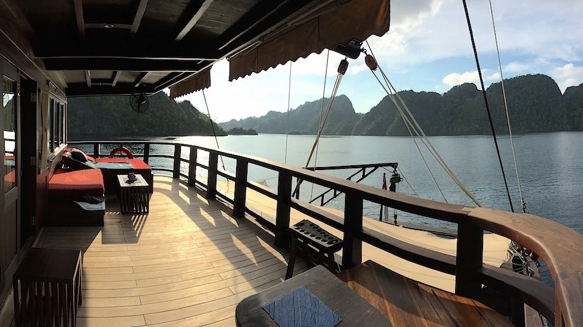
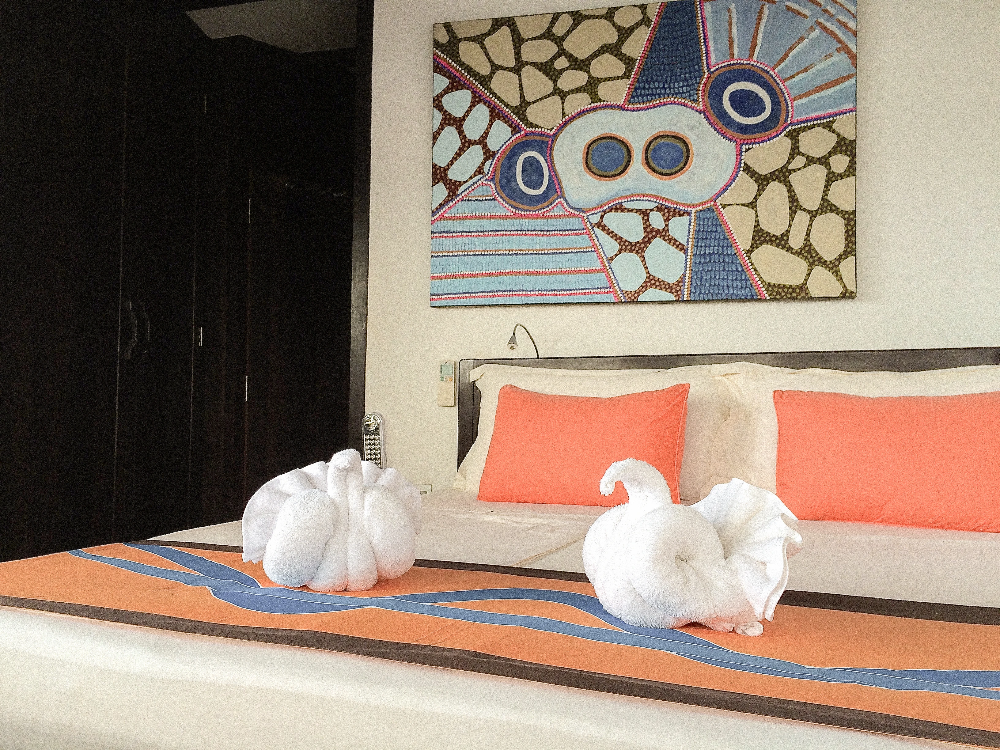
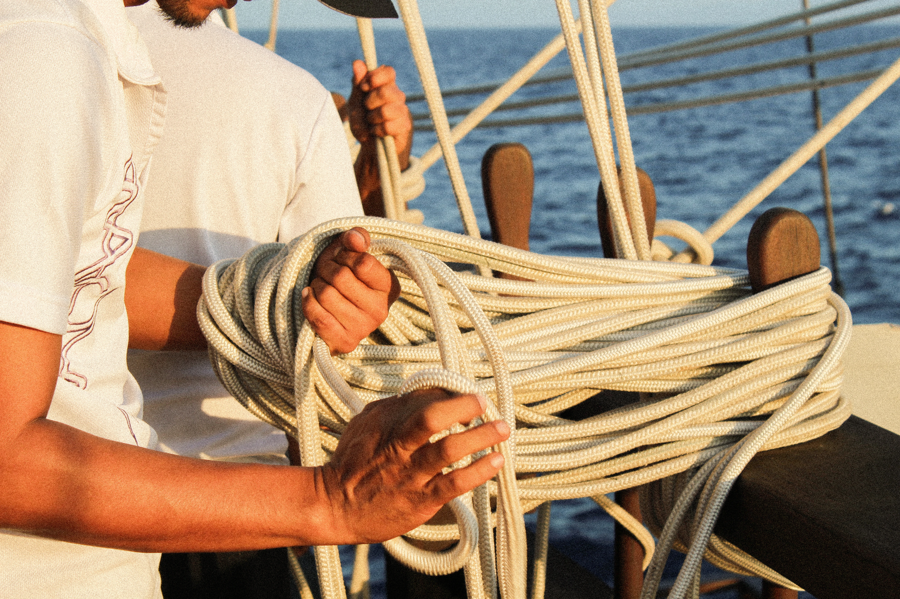
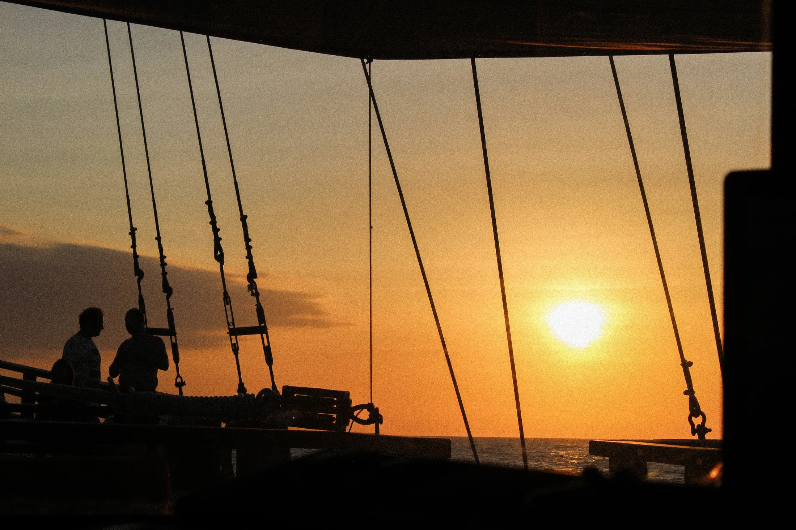
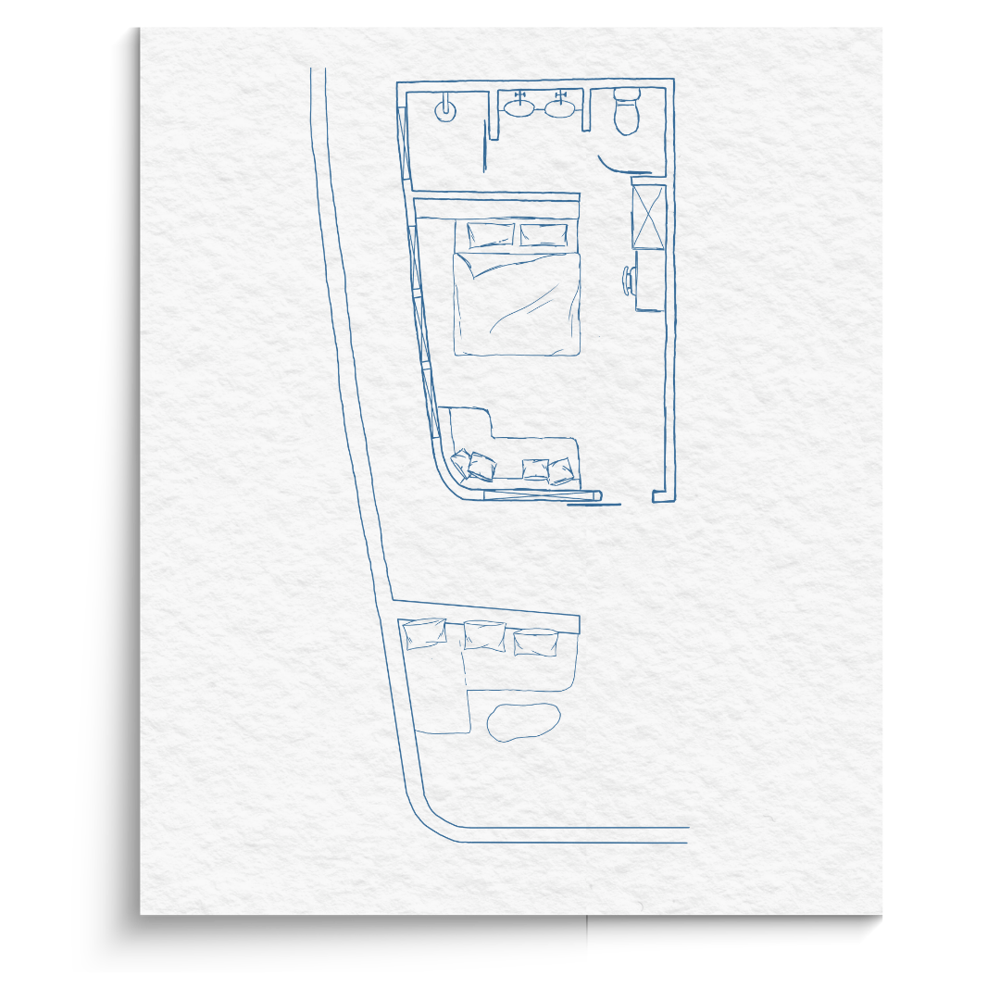
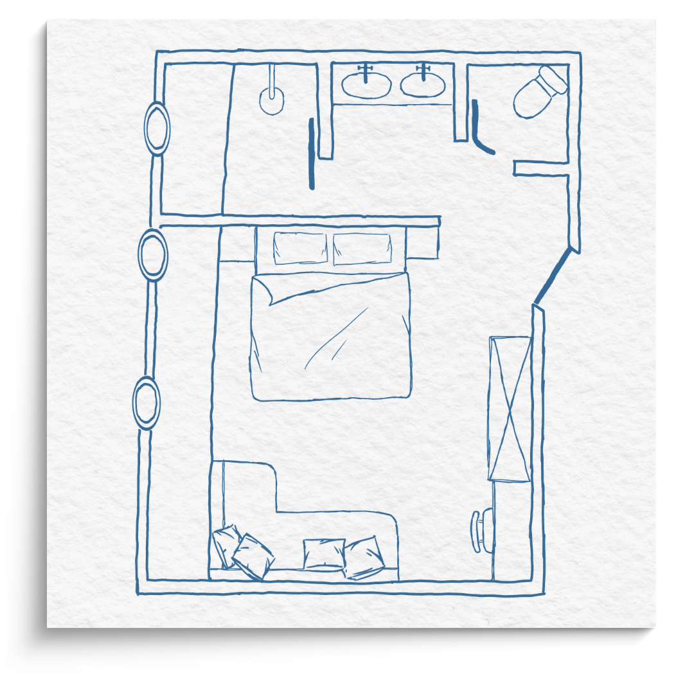
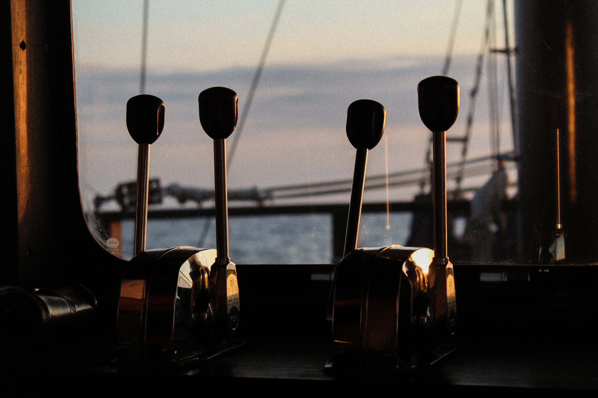

Your room at sea.




A place to come back to
There is something different about waking up at sea.
The light changes. The horizon moves.
And your view never quite stays the same.
WAOW 2 offers 11 cabins across three decks, with four
cabin categories designed for different ways of travelling.
Air conditioning · Private bathroom · Minibar · Safe
All double cabins can be arranged as twins
225° views
private balcony
Upper Deck

Upper Deck
Master Suite.
Our largest cabin. 51 m², with 225° views and a private terrace : sleep under the stars, if the night calls for it.
Inside: a lounge area, a sleeping area, a desk, a walk-in closet and a large bathroom with a separate toilet. The two sofas convert to extra beds, when the cabin needs to hold more than two.
Main Deck
Superior Cabins.
20 m² and a semi-private terrace, at the heart of life on board. Inside: a bathroom with a separate toilet, a wardrobe and a small desk. The sofa converts into an extra bed when needed.
book your stayMain Deck
Terrace
Beautiful sea views

13 m²
Upper Deck
Beautiful Sea Views

Upper Deck
Solo Cabins.
Designed for solo travellers: 13 m² with views out to sea.
Inside: a large bed, a small desk, a wardrobe and a bathroom with a separate toilet.
Your own room. Your own rhythm.
book your stayLower Deck
Deluxe Cabins.
22 m², with porthole windows framing the sea.
Inside: a wardrobe, a small desk and a bathroom with a separate toilet.
If needed, the sofa converts into an extra bed.
22 m²
Lower Deck
Porthole windows

Between one dive and the next
A shower.
A change of clothes.
A little time with the door closed.
Then back on deck.
Because on WAOW, your cabin isn't just where you sleep.
It's where you pause between adventures.
